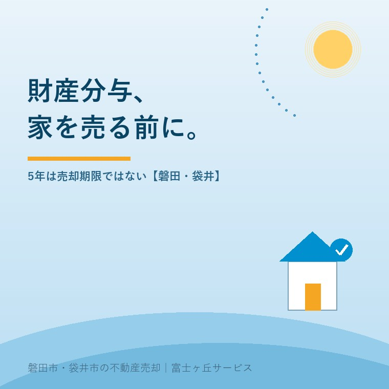
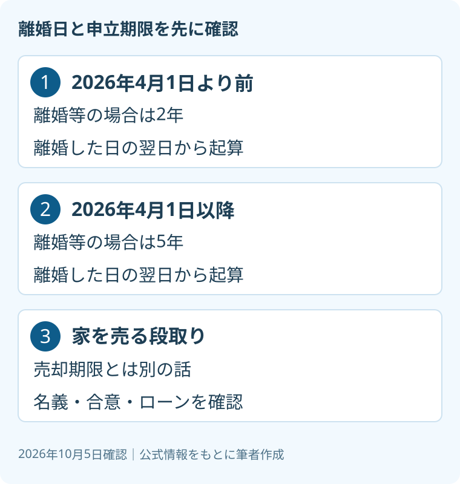

財産分与で家を売る前に、5年の期限を確認
2026年10月5日｜カテゴリ：家の権利整理

この記事の要点
離婚した家は、5年以内に売らないといけないの？
5年は売却期限ではなく、財産分与を家庭裁判所に申し立てる期限です。2026年4月1日より前の離婚等は2年の扱いです。離婚日、名義、ローンを確認し、個別の期限と売却権限は専門家に確認を。磐田市・袋井市では、介護施設の運営から不動産事業を始めた富士ヶ丘サービスのような地域密着の会社に相談する選択肢があります。
大石浩之（磐田市／不動産業）です。離婚後も家の扱いが決まらない場合、「期限が延びたなら売却は後でよい」と受け取る前に、何の期限なのかを確かめます。売り出しを急ぐ話と、権利を守るための申立ては同じではありません。
本記事は2026年10月5日に裁判所の案内を確認したものです。私が担当できるのは、不動産の資料整理と売却実務の案内です。財産分与の対象、割合、申立期限の個別計算は、弁護士などの専門家に確認を。
5年は、家の売却ではなく財産分与の申立期限
裁判所の「財産分与請求調停」は、夫婦が婚姻中に協力して取得した財産を、離婚時または離婚後に分けることを財産分与と説明しています。話合いがまとまらない場合や、話合いができない場合には、家庭裁判所へ調停または審判を申し立てられます。
裁判所の案内では、離婚した日の翌日から起算して5年を経過すると、この申立てはできません。ただし、2026年4月1日より前に離婚等をした場合は2年です。「今から5年」でも「この記事を読んだ日から5年」でもありません。
| 離婚等の時期 | 裁判所が示す申立期限 |
|---|---|
| 2026年4月1日より前 | 離婚した日の翌日から起算して2年 |
| 2026年4月1日以降 | 離婚した日の翌日から起算して5年 |
私がまず伝えたいのは、5年以内に家を売り終えるという規定ではないことです。ここは意外に取り違えやすい点です。制度の期限を理由に、査定額だけで売却を決める必要はありません。一方、売却を決めていないことは、申立期限を止める理由にはなりません。

期限が近いかもしれない場合は、書類が完全にそろうまで待たず、弁護士等へ相談します。家の写真や査定書を集めることと、期限について助言を受けることは並行できます。自分で期限の最終日を確定したつもりにならず、離婚日を示す資料を見てもらってください。
良い点は、資料をそろえて話す時間を取りやすいこと
財産分与の申立期限が5年となる扱いは、対象となる離婚等について、2年の場合より資料整理に使える期間が長くなる点が利点です。家だけでなく預貯金なども確認する話です。住まいの変更と権利の整理を一度に決めづらい方には、時間がある意味は小さくありません。
私は、売却するか残すかを決める材料が増えることを評価します。離婚後の生活費、住み続ける場合の負担、売る場合の手残りを並べられるからです。家の扱いが未定でも、資料を集める作業は進められます。今日、家を売ると決断しなくてもよいのです。
その上で、注文したいのは期限の案内を離婚日とセットで読むことです。2026年4月1日より前の離婚等まで、すべて5年に変わったと受け取るのは危険です。私は、売却の検討を待つことと、権利の確認を待つことは分ける、と言い切ります。
私自身、家族に「急がなくてよい」と案内する言葉には迷いがあります。価格だけの話なら待つ選択もある。しかし申立期限が絡む場面で同じ言葉を使うと、必要な相談まで遅らせかねません。だから私は、待てる作業と期限のある作業を別の欄に置く考えです。
売却査定の前に、名義と評価の資料を分ける
裁判所の案内が挙げる標準的な添付書類には、離婚時の夫婦の戸籍謄本、不動産登記事項証明書、固定資産評価証明書、預貯金通帳の写しや残高証明書等があります。必要に応じて追加書類を求める場合もあると記載されています。
不動産登記事項証明書は、土地や建物の名義、担保などの記録を確認する資料です。固定資産評価証明書は、市町村の評価を確認する資料です。二つは役割が違います。評価証明書の数字を、そのまま今売れる価格として扱わないようにします。
私は資料を「いつの数字か」で仕分けするよう提案します。離婚時の状態を示す資料と、現在の名義や残高を示す資料が混ざると、家族の話がかみ合わなくなります。査定を取る際も、作成日、対象の土地と建物、価格の前提が分かる形で残します。
家が共有名義なら、共有名義の実家を売るときの確認を先に整理します。登記が一人名義だから財産分与の対象外、と自己判断してはいけません。財産分与の対象になるかと、売却時に誰が契約するかは別の確認です。
住んでいる人、鍵を持つ人、登記上の所有者、ローンを返す人を書き出します。同じ人とは限りません。内覧の調整ができても売却の合意があるとは限らない。仲介会社へは、話が決まっている範囲と決まっていない範囲を分けて伝えると、案内の行き違いを減らせます。
ローン残高と手残りを、分与割合の話と混ぜない
家を売る見込み額から費用等を引いた手残りの検討は、財産分与の割合を決めることとは別です。売却実務では、住宅ローン残高や担保の状態を確認します。財産分与の対象や分け方を、仲介会社の査定額だけで確定することはできません。
ローンの確認は抵当権と住宅ローン残高の調べ方が入口になります。売買の見込み額で返済できるか、誰が金融機関へ連絡するかを整理します。金融機関との調整が必要な場合に、売却日だけを先に約束しないようにします。
| 資料の組 | 分けて確認する内容 |
|---|---|
| 戸籍・合意書等 | 離婚日と財産分与の話合いの状況 |
| 登記事項証明書・評価資料 | 名義、担保、評価の時点 |
| ローン資料・売却見積り | 返済と費用を考慮した手残りの見通し |
私の提案は、査定額、返済に使う額、売却に伴う費用を別々に書くことです。数字が未確定なら、空欄にして確認先を添えます。家の価値の話と、現金として残る額の話は違います。費用の一つである仲介手数料の上限も併せて確認します。
この整理表は、分与額の計算書ではありません。売却案を弁護士へ伝えるための材料です。税負担、名義を変える方法、金融機関との契約の扱いは個別事情で変わります。別れた当事者間で金額だけを合意する前に、それぞれの専門家に確認を。
磐田・袋井では、家の所在地だけで申立先を決めない
裁判所の案内による申立先は、相手方の住所地の家庭裁判所、または当事者が合意で定める家庭裁判所です。磐田市や袋井市に家があるという理由だけでは、申立先は決まりません。転居している場合も含め、相談時に住所の状況を伝えます。
申立てに必要な費用として、収入印紙1,200円分と連絡用の郵便切手が示されています。郵便料は裁判所によって異なります。印紙代だけを手続き全体の費用だと考えないでください。弁護士へ依頼する場合の費用は別に確認します。
私はこう考えます。まず一枚の紙に離婚日を書く。次に、権利の相談をする相手と、売却資料を集める相手を別々に書く。家を売る欄は未定のままでよい。この紙をつくるのは実体験の紹介ではなく、私が相談の順番を組むならという提案です。気持ちが追いつかない日でも、確認先が一つ決まれば次の相談につながります。書類が未完成でも、相談の日は決められます。
今日の確認は、離婚日を資料で確かめ、申立期限について弁護士等へ問い合わせることです。富士ヶ丘サービスでは、磐田市・袋井市を中心に、介護や実家の整理を含めて不動産相談を受けています。家族が困らない売却のため、私なら権利相談の結果を踏まえ、査定と段取りを案内します。
よくある質問
- 2026年4月1日より前に離婚した場合も5年ですか？
- 裁判所の案内では、2026年4月1日より前に離婚等をした場合の申立期限は、離婚した日の翌日から起算して2年です。すべての離婚について5年になったわけではありません。離婚日を戸籍等で確認し、期限が近い可能性があるなら資料が全部そろうのを待たず相談します。個別の期限は弁護士などの専門家に確認を。
- 家が一人名義なら、財産分与の確認は不要ですか？
- 登記が一人名義というだけで、財産分与の確認が不要とは判断できません。裁判所は、夫婦が婚姻中に協力して取得した財産を分けることとして説明しています。不動産の取得経緯と資料を弁護士等へ示し、対象や分け方を確認します。売却実務では名義、合意、ローン等も確認し、売却権限の個別判断は専門家に確認を。
- まだ離婚前ですが、家の扱いを話し合えますか？
- 裁判所の案内では、離婚に伴う財産分与の話合いは、夫婦関係調整調停（離婚）の中で行うことができます。離婚後の申立期限と、離婚前の話合いを混同しないでください。家の名義、評価、ローンの資料を整理する作業は検討材料になりますが、売却や分与を先に約束せず、個別の進め方は弁護士などの専門家に確認を。

この記事を書いた人：大石浩之（磐田市／不動産業・宅地建物取引士）
富士ヶ丘サービス株式会社。磐田市・袋井市を中心に、介護と相続、実家の売却を一体で相談できる窓口を設けています。家族が困らない売却のため、資料と現地の条件を一件ずつ整理します。著者プロフィール
本記事は2026年10月5日時点の公開情報と筆者の意見です。制度・数値・手続き・契約条件は変更されることがあります。税務・登記・相続・重要事項説明・契約などの個別判断は、税理士・司法書士・弁護士などの専門家に確認を。